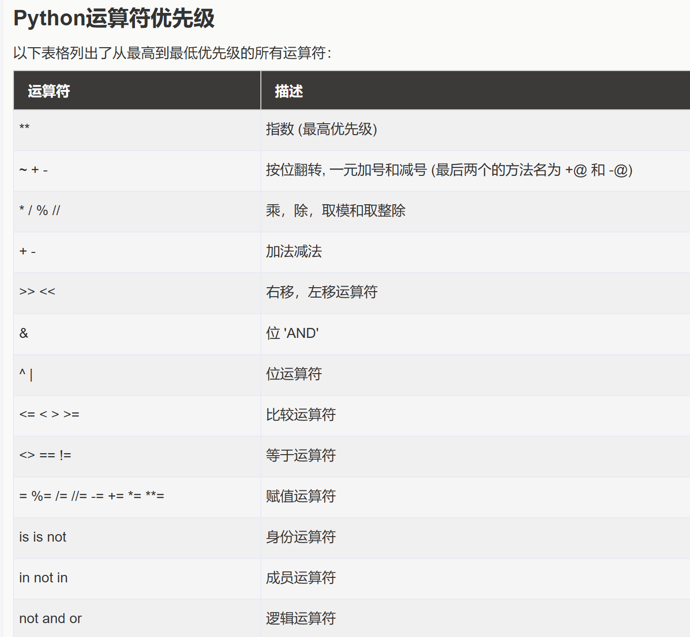

Day3:
1 | print "1 - c 的值为：", c |
拆开看：
"1 - c 的值为："→ 双引号包起来的是字符串文本，里面写啥就原样输出，所以里面这个c永远就是字母 c，不会自动变成数字；- 逗号后面单独的
c→ 这个才是变量，程序会读取变量 c 里面存的数字，打印在后面。
举个对比：
1 | print "1 - c 的值为：", c |
如果想让前面也显示数字，就不能把 c 写在引号里面，要这样写（Python2）：
1 | print "1 -", c, "的值为：", c |
一句话总结： ✅ 引号内的内容：原样文字，c 就是字母 c ✅ 引号外面单独写的 c：才是变量，会替换成它存的数字
运算符
描述
实例
&
按位与运算符：参与运算的两个值,如果两个相应位都为1,则该位的结果为1,否则为0
(a & b) 输出结果 12 ，二进制解释： 0000 1100
|
按位或运算符：只要对应的二个二进位有一个为1时，结果位就为1。
(a | b) 输出结果 61 ，二进制解释： 0011 1101
^
按位异或运算符：当两对应的二进位相异时，结果为1
(a ^ b) 输出结果 49 ，二进制解释： 0011 0001
~
按位取反运算符：将二进制表示中的每一位取反，0 变为 1，1 变为 0。x 类似于 -x-1a ) 输出结果 -61 ，二进制解释： 1100 0011 (以补码形式表示)，在一个有符号二进制数的补码形式。
(
<<
左移动运算符：运算数的各二进位全部左移若干位，由 << 右边的数字指定了移动的位数，高位丢弃，低位补0。
a << 2 输出结果 240 ，二进制解释： 1111 0000
右移动运算符：把”>>”左边的运算数的各二进位全部右移若干位，>> 右边的数字指定了移动的位数
a >> 2 输出结果 15 ，二进制解释： 0000 1111
以下实例演示了Python所有位运算符的操作：
实例(Python 2.0+)
#!/usr/bin/python
-- coding: UTF-8 --
a = 60 # 60 = 0011 1100
b = 13 # 13 = 0000 1101
c = 0
c = a & b; # 12 = 0000 1100
print “1 - c 的值为：”, c
c = a | b; # 61 = 0011 1101
print “2 - c 的值为：”, c
c = a ^ b; # 49 = 0011 0001
print “3 - c 的值为：”, c
c = ~a; # -61 = 1100 0011
print “4 - c 的值为：”, c
c = a << 2; # 240 = 1111 0000
print “5 - c 的值为：”, c
c = a >> 2; # 15 = 0000 1111
print “6 - c 的值为：”, c
以上实例输出结果：
1 - c 的值为： 12
2 - c 的值为： 61
3 - c 的值为： 49
4 - c 的值为： -61
5 - c 的值为： 240
6 - c 的值为： 15
Python 里的假（Falsey / 假值）
在 and、or、if 判断里，下面这些东西都会被当成 “假”，其余全部是真：
False（布尔假）- 数字：
0、0.0、0j（复数 0） - 空容器：
""空字符串、[]空列表、()空元组、{}空字典、set()空集合 None（空对象）
✅ 一句话：空的、0、False、None，都是假值
剩下的全部是真值（True）
- 非 0 数字：
1、-5、3.14 - 非空字符串：
"0"、"abc"（注意：字符 “0” 是真！只有空字符串 “” 才是假） - 有内容的列表、元组、字典、集合：
[0]、{1:2}都是真
结合 and/or 短路再看一遍
1 | print(0 and 20) # 0是假，直接返回0 |
容易踩坑重点
"0" 是真！它不是空字符串，是里面有字符0，很多人在这里搞错。
Python and /or/not 逻辑运算符详解
先记住一个核心：Python 的 and、or 不是只返回 True/False，会做短路求值，直接返回其中一个原值
先假设表里例子：
a=10，b=20（和表格实例匹配）
1. x and y 逻辑与
描述：
如果 x 是假（False、0、空字符串、None 等），直接返回 x； 如果 x 是真，返回 y。
原理：and 需要两边都为真，整体才为真。
- 左边 x 已经是假 → 整个表达式一定假，直接返回 x（短路，不看 y）
- 左边 x 是真 → 最终真假由 y 决定，所以返回 y
例子：a=10，b=20 a and b → x=10（真），所以返回 y=20，和表格一致 ✅
测试几组帮你理解：
1 | 0 and 20 # x是假，返回0 |
2. x or y 逻辑或
描述：
如果 x 是真（非 0、非空），直接返回 x； 如果 x 是假，返回 y。
原理：or 只要一个为真，整体就真。
- 左边 x 已经是真 → 整个表达式一定真，直接返回 x（短路，不看 y）
- 左边 x 是假 → 结果由 y 决定，返回 y
例子：a=10，b=20 a or b → x=10（真），直接返回 x=10，和表格一致 ✅
测试几组：
1 | 10 or 20 # x真，返回10 |
⚠️ 表格这句话写的 “如果 x 是非 0，返回 x” 是简化说法，本质就是 x 为真值就返回 x。
3. not x 逻辑非
这个和上面两个不一样：not 永远只返回布尔值 True / False
- x 为真 →
not x→ False - x 为假 →
not x→ True
例子：not (a and b) a and b 结果是 20（20 是真值），所以 not 20 → False，和表格一致 ✅
1 | not 10 # False |
一句话口诀（超好记）
- and：全真才真，左边假返回左边，左边真返回右边
- or：一真就真，左边真返回左边，左边假返回右边
- not：取反，只出 True / False
补充：短路是什么意思？
and、or 会短路：判断完左边就知道结果时，右边代码根本不会执行
1 | # 左边0是假，and直接返回0，后面print不会运行 |
什么时候你看到 True / False？两种情况
情况①：用了 not
1 | print(not [1,2]) # False |
情况②：手动用 bool () 强制转换
1 | res = 10 and 20 |
情况③：放在 if 里面（隐形转换，但是表达式本身没变）
1 | if 10 and 20: |
这里 10 and 20 的结果依然是 20，只是 if 偷偷把它当成真值判断，表达式本身并没有变成 True。
当if有多个条件时可使用括号来区分判断的先后顺序，括号中的判断优先执行，此外 and 和 or 的优先级低于>（大于）、<（小于）等判断符号，即大于和小于在没有括号的情况下会比与或要优先判断。
#!/usr/bin/python
-- coding: UTF-8 --
例3：if语句多个条件
num = 9
if num >= 0 and num <= 10: # 判断值是否在0~10之间
print ‘hello’
输出结果: hello
num = 10
if num < 0 or num > 10: # 判断值是否在小于0或大于10
print ‘hello’
else:
print ‘undefine’
输出结果: undefine
num = 8
判断值是否在05或者1015之间
if (num >= 0 and num <= 5) or (num >= 10 and num <= 15):
print ‘hello’
else:
print ‘undefine’
输出结果: undefine
Python 成员运算符：in 和 not in
作用：判断一个元素是不是在某个容器（序列）里面，结果只会返回 True / False
支持的容器：字符串、列表、元组、集合等
1. in
如果值在序列里面 → 返回
True；不在 →False
语法：x in y，意思：x 是否存在于 y 中
示例：
1 | lst = [10,20,30] |
2. not in
和
in反过来：不在里面 → True；在里面 → False
语法：x not in y，意思：x 是否不在 y 中
示例：
1 | lst = [10,20,30] |
简单口诀
✅ in：在里面就是 True
✅ not in：不在里面才是 True
小注意点
- 字符串里用
in是字符、子串匹配
1 | print("he" in "hello") # True，子串 he 存在 |
- 列表里是完整元素匹配，不能匹配一部分
1 | print(1 in [10,20]) # False，列表里没有单独的1 |
综合小例子
1 | a = 5 |
先一句话讲清楚：in、not in 是判断运算，它们会先算出一个结果（True 或者 False），print() 打印的是运算得到的结果，不是打印括号里整段文字。
拿这一行举例：
1 | print(10 in [10,20,30]) |
- Python 先算括号里面：
10 in [10,20,30]
→ 10 确实在列表里，这个式子的值 =True - 然后 print 把这个结果
True输出
两种 print 的区别（重点！）
✅ 情况 1：括号里是字符串（带引号），直接打印里面内容
1 | print("10 in [10,20,30]") |
输出：
1 | 10 in [10,20,30] |
因为加了引号 " "，它就是普通文本，不做判断。
✅ 情况 2：括号里没有引号，是表达式，先计算再打印结果
1 | print(10 in [10,20,30]) |
输出：
1 | True |
没有引号，in 是运算符，要执行判断。
对比看这两段
1 | # 不带引号 → 运算，输出True/False |
输出：
1 | True |
简单总结
- 有英文引号
" "/' '：原样打印文字 - 没有引号，里面有
in、+、-、>这些：先算结果，再打印结果
is 和 == 的区别（核心一句话）
==：比较值是否相等（看内容一不一样）is：比较是不是同一个对象（看内存地址是不是同一块，id()相同）
is也叫身份运算符，配套还有is not
举例子（列表最容易看懂）
1 | a = [1,2,3] |
输出示例：
1 | True |
虽然内容一模一样，但是是两个独立的列表，所以 is 是 False。
1 | c = a |
补充：整数缓存（小坑）
Python 对 -5 ~ 256 的整数做了缓存，这些数字会复用同一个内存，所以这里 is 也会是 True：
1 | x = 10 |
口诀
✅ ==：只管内容，长得一样就 True
✅ is：只管身份，同一个内存才 True
什么时候用谁？
- 判断数值、内容是否相等：用
== - 判断是不是
None：规范写法用x is None（不要用 == None）

条件,循环while，for语句
错误代码
1 | i=1 |
✅ 正确写法
1 | i=1 |
重点规则：
while、for、if、def这一类语句，**行末尾一定要加英文冒号:**，冒号代表后面是缩进的代码块。 冒号是英文半角的:，不能写成中文冒号：
运行结果
1 | 1 |
顺便提醒：冒号之后，下一行代码一定要缩进（4 个空格 / Tab），你这里缩进是对的，就差冒号啦。
要不要我给你整理一份 “哪些语句后面必须加冒号” 清单？
为什么结果没有4
我们先看代码：
1 | i=1 |
条件是 i <= 3，也就是只有 i 小于或者等于 3 的时候，循环才会执行
我们一步步走一遍：
- 一开始
i = 1，1 <=3→ True → 打印1，然后i = 1+1 = 2 i = 2，2 <=3→ True → 打印2，然后i = 2+1 = 3i = 3，3 <=3→ True → 打印3，然后i = 3+1 = 4i = 4，4 <=3→ False → 循环直接结束，不会进入循环体，自然不会 print (4)